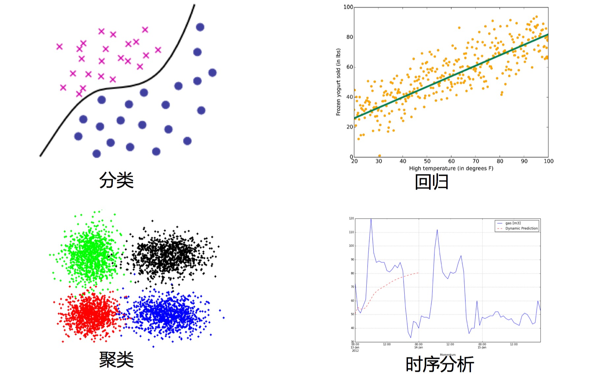

数据建模基础
大数据分析场景和模型应用
数据分析建模需要先明确业务需求，然后选择是 描述型分析 还是 预测型分析。
如果分析的目的是描述目标行为模式，就采用描述型数据分析，描述型分析就考虑 关联规则、 序列规则 、 聚类 等模型。
如果是预测型数据分析，就是量化未来一段时间内，某个事件的发生概率。有两大预测分析模型， 分类预测 和 回归预测。
常见的数据建模分类

分类与回归
分类：是通过已有的训练样本去训练得到一个最优模型，再利用这个模型将输入映射为相应的输出，对输出进行简单的判断从而实现分类的目的，也就具有了对未知数据进行分类的能力。
回归：是基于观测数据建立变量间适当的依赖关系，以分析数据内在的规律，得到响应的判断。并可用于预报、控制等问题。
应用：
信用卡申请人风险评估、预测公司业务增长量、预测房价，未来的天气情况等
原理：
回归：用属性的 历史数据 预测未来趋势。算法首先假设一些已知类型的函数可以匹配目标数据，然后分析匹配后的误差，确定一个与目标数据匹配程度最好的函数。回归是对真实值的一种 逼近预测。
分类：将数据映射到 预先定义的 群组或类。算法要求基于数据 特征值 来定义类别，把具有某些特征的数据项映射到给定的某个类别上。分类并没有逼近的概念，最终正确结果只有一个。 在机器学习方法里，分类属于监督学习。
区别：
分类模型采用 离散预测值，回归模型采用 连续的预测值。
聚类
聚类：就是将相似的事物聚集在一起，不相似的事物划分到不同的类别的过程。
聚类分析：又称群分析，它是研究（样品或指标）分类问题的一种统计分析方法，同时也是数据挖掘的一个重要算法。
应用：
根据症状归纳特定疾病、发现信用卡高级用户、根据上网行为对客户分群从而进行精确营销等。
原理：
在没有给定划分类的情况下，根据信息相似度进行信息聚类。
聚类的输入是一组 未被标记的数据，根据样本特征的距离或相似度进行划分。划分原则是保持最大的组内相似性和最小的组间相似性。
不同于分类，聚类事先 没有任何训练样本，直接对数据进行建模。聚类分析的目标，就是在相似的基础上收集数据来分类。 在机器学习方法里，聚类属于无监督学习。
时序模型
- 不管在哪个领域中（如金融学、经济学、生态学、神经科学、物理学等），时间序列（time series）数据都是一种重要的结构化数据形式。在多个时间点观察或测量到的任何事物，都可以形成一段时间序列。时间序列大多都是固定频率的，数据点将根据某种规律定期出现。
应用：
下个季度的商品销量或库存量是多少？明天用电量是多少？今天的北京地铁13号线的人流情况？
原理：
描述 基于时间或其他序列的 经常发生的规律或趋势，并对其建模。 与回归一样，用已知的数据预测未来的值，但这些数据的区别是 变量所处时间的不同。重点考察数据之间在 时间维度上的关联性。
常见的数据分析应用场景如下：
市场营销
- 营销响应分析建模(逻辑回归，决策树)
- 净提升度分析建模(关联规则)
- 客户保有分析建模(卡普兰梅尔分析，神经网络)
- 购物蓝分析(关联分析Apriori)
- 自动推荐系统(协同过滤推荐，基于内容推荐，基于人口统计推荐，基于知识推荐，组合推荐，关联规则)
- 客户细分(聚类)
- 流失预测(逻辑回归)
风险管理
- 客户信用风险评分(SVM，决策树，神经网络)
- 市场风险评分建模(逻辑回归和决策树)
- 运营风险评分建模(SVM)
- 欺诈检测(决策树，聚类，社交网络)
....